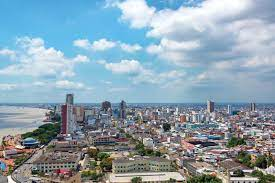
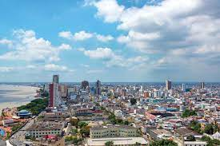
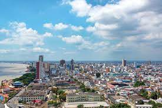
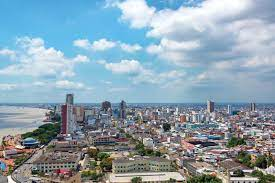

The picture above is a family photo of my mom's side of the family(Ecudorian). This part of the family all reside in Long Island so im able to see them quite often since i just need to take the LIRR to get there. The time I spent with them really allowed me to connect more to my Ecudorian roots as i spent the majority of my life spending time more with my dominican side, but luckily I've interacted a lot more with my mom's family the last two years. I've been very grateful foe theit support and overall care that they've shown me.
For more background info my Mom and her family are from Guayaquil,Ecuador one if the biggest cities in thw country. That's where my mom and her 8 siblings grew up. They all lived in a small two story home with three bedrooms, and in general they were short on money. Though they grew up in poor circumstances they all still managed to come to the states and make a living for themselves, and for that I'm proud to be apart of their family.